BENDING OF BEAMS WITH NON-SYMMETRICAL CROSS SECTIONS
The majority of aircraft structural components consist of beams with non-symmetrical cross section acting in bending . For this reason an expression needs to be derived to allow for the determination of the stresses induced by bending moments to such sections.
SIGN CONVENTION AND NOTATION
Look at the Oxyz system of axis, with an arbitrary beam parallel to the z-axis:
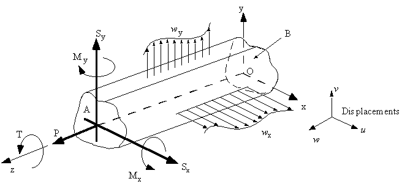 |
Figure 8 : Notation and sign convention for positive forces, moments and displacements. |
Where :
T = Torque
M = Bending Moment
S = Shear Force
w
= Distributed loadP = Axial or direct load
u,v,w = Axial displacements
All of these externally applied loads are positive in the direction indicated in the figure. Internal moment and forces applied to face A are in the same direction and sense as externally applied loads. However on face B, the positive internal moments and forces are in the opposite sense.
RESOLUTION OF BENDING MOMENTSA bending moment M applied in any plane parallel to the z-axis can be resolved into Mx and My components by normal vector rules.
By doing it in a visual way it will be easier to see:
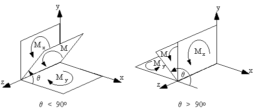 |
Figure 9: Resolved bending moment about x and y axis. |
From Figure 9, the following relationships can be obtained:
$$M_x = M sin(θ)$$ $$M_y = M cos(θ)$$and that these moments can have different sign depending on the value of θ. For example if $θ > π/2$ , Mx is positive and My is negative.
STRESS DISTRIBUTION DUE TO BENDING (ETB-NonSym)
Consider a beam of arbitrary non-symmetrical cross section, which supports bending moments Mx and My, bending about some axis in the cross section. This is the plane of no bending stress, called Neutral Axis (N.A.).
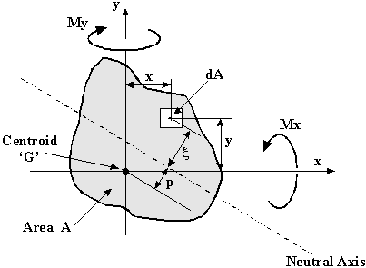 |
Figure 10: Determination of Neutral Axis location. |
Let the axis origin coincide with the centroid G of the cross section, and that the neutral axis is a distance p from G.
The direct stress σz on element dA at point (x,y) and distance ζ from the neutral axis is:
$$σ_z = E ε_z$$Look at the beam in a plane parallel to the neutral axis with two segments ij and kl which are of equal length when the beam is undeflected:
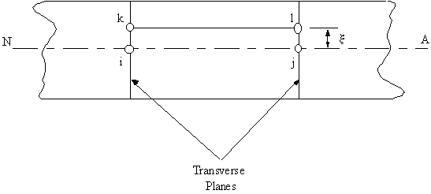 |
Figure 11: Side view of undeflected beam with segments ij and kl marked. |
Once the beam has been deflected this section will look like this:
|
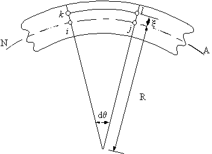 |
|
Figure 12: Deflected beam. |
where:
R = the radius of curvature
dθ = angle between planes ik and jl
The strain in plane kl can be defined as:
$$ε = {ΔL}/{L} = {kl-ij}/{ij}$$with
$$ij = R dθ$$and
$$kl = (R + ζ)dθ$$giving
$$ε = ζ/R$$By substituting back into the stress equation it gives:
$$σ_z = {ζE}/R$$Now that a stress equation has been obtained, it is necessary to satisfy both rotational and linear equilibrium at the ends of the beam. That is, the summation of the forces through the depth of the beam is equal to '0', and the summation of the moments through the depth of the beam is equal the applied moments Mx and My.
As the beam supports pure bending, the resultant load on the end section must be zero. Hence
$$ΣF_z = ∫_A σ_z dA = 0 $$Substituting for σz gives:
$$ ∫_A {E ζ}/R .dA = E/R ∫_A ζ dA = ∫_A ζ dA = 0$$This equation defines the location of the centroid of the section, it follows that the neutral axis must pass through the centroid.
Rather than use this equation to find the location of the centroid, it is much easier to locate the centroid about the xy-axis by using
$$x↖{-} = { Σ x↖{-}_i * A_i }/{ Σ A_i}$$ $$y↖{-} = { Σ y↖{-}_i * A_i }/{ Σ A_i}$$In order to have moment equilibrium, it is necessary to re-draw Figure 10 but with the axis passing through the centroid.
|
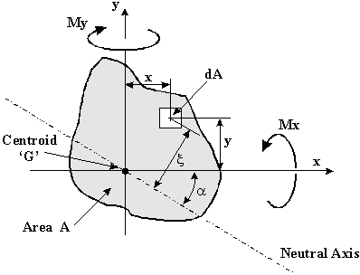 |
|
Figure 13: Beam section with Neutral Axis passing through centroid. |
In order to see this in more detail, Figure 14 shown a close up of the axis and the area dA.
|
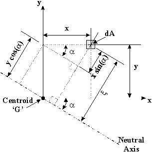 |
|
Figure 14: Detail of area dA in beam cross-section. |
If the inclination of the Neutral Axis (N.A.) is at an angle from the x-axis then :
$$ζ = x.sin(α) + y.cos(α)$$and substituting into equation for σ_z gives:
$$σ_z = E/R (x.sin(α)+ y.cos(α))$$The moment resultants have the same sense as the applied moments, hence:
$$ M_x = ∫_A σ_z.y.dA , M_y = ∫_A σ_z.x.dA$$and substituting from above gives:
$$M_x = E/R ∫_A (xy.sin(α) + y^2.cos(α)).dA$$and
$$M_y = E/R ∫_A (x^2.sin(α) + xy.cos(α)).dA$$Both the sin(α) and cos(α) terms are not a function of dA, so they can be treated as constants for the integration. What remain are terms which only have to do with the characteristics of the cross sectional shapes of the beam, and these are just the 2nd moments of area of the beam.
The second moments of area about the xy axes are:
$$I_{xx} = ∫_A y^2 dA \text" , " I_{yy} = ∫_A x^2 dA \text" , " I_{xy} = ∫_A xy.dA $$which gives:
$$M_x = {E.sin(α)}/R I_{xy} + {E.cos(α)}/R I_xx $$ $$M_y = {E.sin(α)}/R I_{yy} + {E.cos(α)}/R I_xy $$solving simultaneously gives,
$${E cos(α)}/R = {M_x I_{yy} - M_y I_{xy}}/{I_xx I_yy - I_{xy}^2}$$Substituting into Equation for σz gives:
$$ σ_z = ({M_y I_{xx} - M_x I_{xy}}/{I_{xx} I_{yy} - I_{xy}^2}) x + ({M_x I_{yy} - M_y I_{xy}}/{I_{xx} I_{yy} - I_{xy}^2}) y $$By defining the terms shown as Effective Bending Moment,
$$M↖{-}_x = {M_x - M_y I_{xy} / I_{yy}}/{1 - I_{xy}^2/{I_{xx} I_{yy}}} $$and
$$M↖{-}_y = {M_y - M_x I_{xy} / I_{xx}}/{1 - I_{xy}^2/{I_{xx} I_{yy}}} $$Equation for σ>sub>z can be re-written as follows:
Note that if the beam is symmetrical about the x -axis or y-axis then: $$ I_{xy} = 0 \text" , " M↖{-}_x = M_x \text" , " M↖{-}_y = M_y $$and the x & y axes are the principal axes.
POSITION OF NEUTRAL AXIS
The location of the Neutral Axis was defined by using the centroid as shown above.
$$x↖{-} = { Σ x↖{-}_i * A_i }/{ Σ A_i} \text" , " y↖{-} = { Σ y↖{-}_i * A_i }/{ Σ A_i}$$For a beam with a symmetrical cross section, the centroid is the point defined by equation 3.3 and the Neutral Axis is parallel to the x and y axis. For a non-symmetrical beam cross section however, the Neutral Axis passes at some angle α with respect to the x-axis. What needs to be done is to define the angle of the neutral axis (N.A.)
At the N.A. the normal bending stresses are equal to σz = 0, given that:
$$ 0 = {M↖{-}_x}/{I_{xx}} y_{N.A.} + {M↖{-}_y}/{I_{yy}} x_{N.A.} $$where:
xN.A. and yN.A. are coordinates of points on the neutral axis, giving:
$$ {y_{N.A.}}/{x_{N.A.}} = - {M↖{-}_y}/{M↖{-}_x} {I_{xx}}/{I_{yy}} $$By taking the inverse tan of the angle α, the angle of the Neutral Axis with respect to the x-axis can be found, given by
$$ tan(α) = {y_{N.A.}}/{x_{N.A.}} = - {M↖{-}_y}/{M↖{-}_x} {I_{xx}/{I_{yy}} $$Example 1:
The beam shown is subjected to a bending moment of 150Nm about the x-axis. Calculate the maximum direct stress due to bending and the location where it acts.
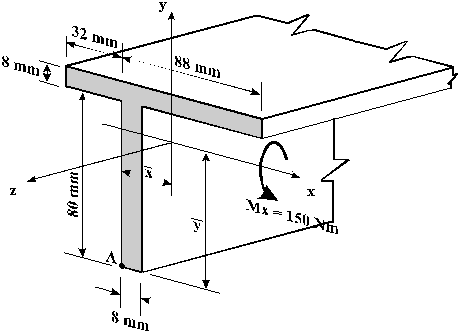 |
Figure 15: Beam cross section with applied bending moment. |
and
$$y↖{-} = { Σ y↖{-}_i * A_i }/{ Σ A_i}$$b) Shift axis to centroid
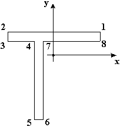 |
Figure 16: Beam cross section with axis shifted to centroid position. |
c) Determine other sectional properties
$$ I_{xx} = ∫_{A} y^2 dA $$ $$ I_{yy} = ∫_{A} x^2 dA $$ $$ I_{xy} = ∫_{A} xy dA $$d) Calculate effective bending moments
Since Mx = 1500 and My = 0, substituting these values into equations gives:
$$M↖{-}_x = {M_x - M_y I_{xy} / I_{yy}}/{1 - I_{xy}^2/{I_{xx} I_{yy}}}$$$$M↖{-}_y = {M_y - M_x I_{xy} / I_{xx}}/{1 - I_{xy}^2/{I_{xx} I_{yy}}} $$
e) Determine bending stress equation and cross section stresses
Substitute the values calculated above into the equation for σz.
$$ σ_z = -0.03886 x + 0.14972 y \text" Mpa"$$Substituting the coordinates of all the corner points from Figure 16 give that:
| Point | x (mm) | y (mm) | σz (MPa) |
|---|---|---|---|
| 1 | 72 | 21.6 | 0.436 |
| 2 | -48 | 21.6 | 5.1 |
| 3 | -48 | 13.6 | 3.9 |
| 4 | -16 | 13.6 | 2.66 |
| 5 | -16 | -66.4 | -9.32 |
| 6 | -8 | -66.4 | -9.63 |
| 7 | -8 | 13.6 | 2.34 |
| 8 | 72 | 13.6 | -0.76 |
This method can be used to determine the stresses due to bending in any type of beam with any type of cross section.
APPROXIMATION FOR THIN WALLED SECTIONS
Due to the thin nature of aircraft structures, the assumption can be made that stresses are constant through the thickness 't' of the skin. By saying this, the square and higher powers of 't' can be neglected from the computation of sectional properties.
To see this, look at a channel section:
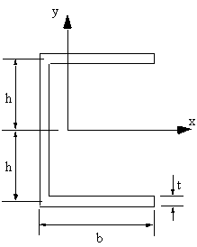 |
Figure 17: Thin-walled channel section. |
1) Because the section is symmetrical about the x-axis, then Ixy = 0
2) The second moment of area Ixx is given by:
$$ I_{xx} = 2 ( {b t^3}/{12} + b t h^2 ) + { t ( 2 (h - t/2))^3}/{12}$$Expanding the RHS, gives:
$$ I_{xx} = 2 ( {b t^3}/{12} + b t h^2 ) + t /{12} ( 2^3 (h^3 - -3h^2 t/2 + 3h t^2/4 - t^3/8))$$ by eliminating t2 powers and higher it becomes: $$ I_{xx} = 2bth^2 + { 8th^3 } /{12} $$and similarly
$$ I_{yy} = 2 {tb^3}/{12} + 2tb ({hb}/{2b + 2h})^2 + 2ht ( {b^2}/{2b + 2h})^2$$This indicates that the sectional properties may be calculated as if the section was represented by a thin line, as shown in Figure 18, disregarding any t2 or higher terms.
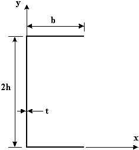 |
Figure 18: Approximation of channel section. |
For this discrete thin walled section, the sectional properties would be found as follows:
1) Determine location of centroid
$$x↖{-} = {2bt b/2}/{2bt+2ht} = b^2/{2b + 2h}$$$$y↖{-} = {bt(2h)+ (2ht) h} / {2bt + 2ht} = h $$
2) Shift axis to centroid
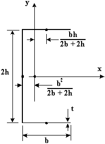 |
Figure 19: Axis at centroid |
3) Determining moments of inertia
$$I_{xx} = {t(2h)^3}/{12} + 2bth^2 $$$$I_{yy} = {2tb^3}/{12} + 2bt( {hb}/{2b + 2h}) + 2ht ( b^2/{2b + 2h}) $$
These results are exactly the same as for the section considering the skin material thickness and then disregarding all t2 and higher terms.
Since not all skin sections will lie parallel to either the x or y axis, the local moments or area for a section of skin at an angle q with respect to the x-axis are given by the following equations.
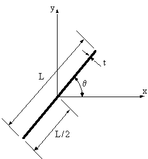 |
Figure 20: Thin skin section inclined at an angle θ wrt the x-axis |
GENERAL LOADING RELATIONSHIPS
Consider an element of length δz from a beam with an unsymmetrical cross section with all types of loads applied in the y-z plane, Figure 21.
|
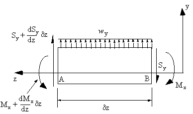 |
|
Figure 21: Equilibrium of generally loaded beam element in zy-plane. |
Taking moments about A gives:
$$ Σ M_A = 0 = ( M_x + {∂ M_x}/{∂z} δz) - S_y δz + w_y {δz^2}/2 - M_x $$dividing by δz and in the limit as δz → 0 , this equation simplifies to :
$$ S_y = {∂ M_x}/{∂ z}$$Combining these two equations gives:
$${∂^2 M_x} / { ∂ z^2} = {∂ S_y}/{∂ z} = -w_y$$Similarly, about the x-z plane:
$${∂^2 M_y} / { ∂ z^2} = {∂ S_x}/{∂ z} = -w_x$$Consider now an element of length δz from a beam with an unsymmetrical cross section with only an applied torque (τ(z)) about z-axis, Figure 22.
|
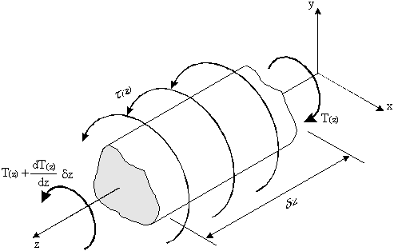 |
|
Figure 22: Torque equilibrium of beam section of length dz. |
Taking moments about the z-axis:
$$Σ T = 0 = -T_{(z)} + ( T_{(z)} + {d T_{(z)}}/{dz} δz) + τ_{(z)} δz$$dividing by δz and in the limit as δz → 0 , this equation simplifies to :
$$ {d T_{(z)})/ {dz} = - τ_{(z)}$$By assuming that a parameter $S↖{-}_y$ has the same relationship to $M↖{-}_x$as Sy has to Mx then by differentiating above equations, produces:
$$S↖{-}_x = {∂ M↖{-}_y}/{∂z} = {S_x - S_y {I_{xy}}/{I_{xx}} }/{1 - I_{xy}^2/{I_{xx} I_{yy}}} $$$$S↖{-}_y = {∂ M↖{-}_x}/{∂z} = {S_y - S_x {I_{xy}}/{I_{xx}} }/{1 - I_{xy}^2/{I_{xx} I_{yy}}} $$
Also the parameters $w↖{-}_x$ and $w↖{-}_y$ are related to the load intensities wx and wy in the same manner such that by differentiating above equations gives:
$$w↖{-}_x = {w_x - w_y {I_{xy}}/{I_{xx}} }/{1 - I_{xy}^2/{I_{xx} I_{yy}}} $$$$w↖{-}_y = {w_y - w_x {I_{xy}}/{I_{xx}} }/{1 - I_{xy}^2/{I_{xx} I_{yy}}} $$
The parameters $S↖{-}$, $S↖{-}$, $w↖{-}_x$ and $w↖{-}_y$ are called the EFFECTIVE SHEAR FORCES and LOAD INTENSITIES.